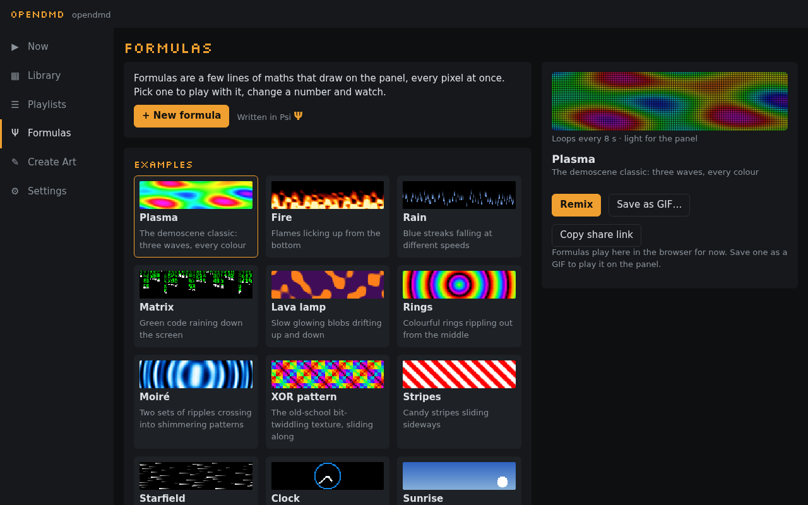

Formulas#

A formula is a few lines of maths that draw on the panel, every pixel at once. Change a number and the picture changes as you type. Formulas are written in Psi (Ψ), OpenDMD's small language for the panel's pixels, but you don't need to know it to start: open an example, drag a number, and watch.
Open Formulas (Ψ) in the app's menu. Formulas work in the online demo too, with no player at all.
The gallery#
Formulas opens on the examples (plasma, fire, rain, a clock, a sunrise that follows the time of day, and more) and the formulas you've saved. Pick one to see it playing in the panel look, with its sliders if it has any. From there:
- Remix (an example) or Edit (one of yours) opens it in the editor.
- Save as GIF… makes a GIF of it in Create Art.
- Copy share link gives you a link to its own page, for anyone (see Sharing).
- + New formula starts a fresh one.
If you leave the editor without saving, the gallery offers Continue editing at the top, and the app asks before anything replaces it.
Formulas play here in the browser for now. To play one on the panel, save it as a GIF.
The editor#
The preview is on top (on a phone it stays in view while you scroll) and the formula underneath; the preview follows as you type. Under it, a line says how long the loop is (or that the formula follows the clock) and how hard it is for the panel. If something is wrong, the editor says what in plain words just above the formula, marks the place, and keeps playing the last version that worked, dimmed.
- Drag a number left or right to try other values. On a computer, drag it right in the text, or put the cursor on it and press Alt + ↑ or ↓ (Shift for bigger steps). On a phone, tap a number and drag the bar that appears under the formula, or use its − and + buttons. Numbers can go below zero. Ctrl+Z (⌘Z) undoes a whole drag at once.
- Sliders: a formula that uses
a,borcgets a slider for each, 0 to 1. A comment like-- a: speedgives the slider a name. - Cheat sheet lists everything the language has, with a line on each. Tap a name to put it in.
- Save keeps the formula in this browser, under its name.
A plasma in two minutes#
Press + New formula, clear the text, and build it up line by line.
- Start with a gradient.
xgoes from 0 at the left edge to 1 at the right, andgrayturns a number from 0 to 1 into black to white:
gray(x)
- Make waves.
singoes up and down between −1 and 1 once for every 1 it is given, sox*2gives two waves across the panel. Halve it and add a half to keep it between 0 and 1:
gray(sin(x*2)*0.5 + 0.5)
- Set it moving.
tis the time in seconds;loop 8makes the loop eight seconds long, andt/8moves the wave once along in that time, so it loops without a jump:
loop 8
gray(sin(x*2 + t/8)*0.5 + 0.5)
- Add a second wave going up and down the panel (
yis 0 at the bottom, 1 at the top), moving the other way and twice as fast. Give the sum a name:
loop 8
wave = sin(x*2 + t/8) + sin(y*1.5 - t/4)
gray(wave/4 + 0.5)
- Colour it.
hsvtakes a hue (once round the rainbow for every 1), a saturation and a brightness. Let the wave pick the hue, and turn the rainbow once a loop:
loop 8
wave = sin(x*2 + t/8) + sin(y*1.5 - t/4)
hsv(wave/4 + t/8, 1, 1)
- One more wave, on a slant, and it's the Plasma example:
loop 8
wave = sin(x*2 + t/8) + sin(y*1.5 - t/4) + sin(x*1.5 + y + t/8)
hsv(wave/6 + t/8, 0.9, 1)
Now drag the 2 in x*2, or the 0.9, and see what happens.
The language#
A formula is a few lines: names you set (wave = …, each name once), and a
colour on the last line. It is worked out for every pixel, every frame.
-- starts a comment. Everything is a number; there are no loops, lists or
words.
Values
| name | what |
|---|---|
x, y |
where the pixel is: 0 to 1 across (left to right) and up (bottom to top) |
px, py |
the pixel's column, 0–127, and row from the bottom, 0–31 |
i |
the pixel's number, 0–4095, from the top left |
t |
seconds into the loop |
hour, minute, second |
the time of day |
a, b, c |
the sliders, 0 to 1 |
w, h |
128 and 32 |
Functions. Waves and angles are in turns, not degrees or radians:
sin(0.25) is 1, and sin repeats every 1.
| function | what |
|---|---|
sin(v), cos(v) |
a smooth wave between −1 and 1 |
tri(v), saw(v), sqr(v) |
triangle, sawtooth and square waves, −1 to 1 |
abs(v), floor(v), frac(v), sqrt(v) |
size, whole part, fraction, square root |
min(a, b), max(a, b), clamp(v, lo, hi) |
limits |
mix(a, b, k) |
from a to b as k goes from 0 to 1 |
step(edge, v) |
1 when v is past edge, else 0 |
smoothstep(e0, e1, v) |
a soft step from 0 to 1 |
len(dx, dy) |
the distance, √(dx² + dy²) |
atan2(dy, dx) |
an angle, in turns (−½ to ½) |
noise(x, y, z) |
smooth random hills, 0 to 1 |
hash(a, b) |
a random number, 0 to 1 |
c ? a : b, select(c, a, b) |
a when c is true (not 0), else b |
Operators: + - * / %, comparisons < <= > >= == != (1 for true, 0 for
false), and and, or, not. There is no power operator: write x * x.
Colour (the last line):
| colour | what |
|---|---|
hsv(hue, sat, val) |
hue in turns; saturation and brightness 0 to 1 |
rgb(r, g, b) |
red, green and blue, 0 to 1 each |
pal(name, v) |
a palette, v from 0 to 1: fire, ice (or ocean), chrono, amber, rainbow, gray |
gray(v) |
black to white |
A last line that is just a number is gray of it.
The loop and the frame. loop N on a line of its own sets how long
the loop is, in seconds (8 if you leave it out). For a seamless loop,
everything that moves should come back to where it started: use t/N,
t*2/N and so on with the loop's own N. Values inside frame { … }
are worked out once a frame rather than for every pixel; they can't use
the pixel's position.
Limits. A formula can be 4,096 characters and 256 steps (the editor shows the count). Numbers go from −32,768 to 32,767; past that they stop at the end instead of wrapping round, and dividing by zero gives the biggest number of the right sign rather than an error.
Keeping them fast#
Formulas are made to run on the panel's own small processor too, which draws every pixel 50 times a second. The editor rates each one light, medium or heavy for the panel (hover for an estimate in milliseconds); all the examples are light or medium.
- Cheap:
+ - *, the waves (sin,cos,tri,saw,sqr),abs,frac,min,max,clamp,step, comparisons,pal. - Dividing by a fixed number (
x/8) is free: it becomes a multiply. - Dear:
noise,len,sqrt,atan2,smoothstep,hash, and dividing by something that changes from pixel to pixel. One of them is fine; several add up. - Anything that doesn't depend on the pixel (
hour/12,sin(t/8)) is worked out once a frame, whatever line it's on.
Sharing#
Copy share link gives a link to the formula's own page on the OpenDMD site, with the whole formula in it, its name and its sliders. Anyone can open it, with or without a player: the page plays it in the panel look, shows its code and its sliders, and has
- Open on my display: asks once for your display's address (it
suggests
opendmd.local; the name or IP address your display shows) and opens the formula in your display's editor, where you can save it. Your phone or computer must be on the same network as the display. - Try it in the demo: opens it in the online demo's editor.
- Copy code and Copy link, and a QR code of the link to open it on a phone.
- Submit to the gallery (see The formula gallery).
On your player, the share box also has Copy a link to this display: that one opens the formula in your own player's app, on your own network. Keep formulas short to share them: past about 1,500 characters the link gets long enough that some apps cut it, and the share box says so.
The formula gallery#
The formula gallery on the OpenDMD site has formulas people have made, and the examples. Open shows one on its own page; Remix opens it in the demo's editor.
To add yours, open its share link and press Submit to the gallery: give it a description, your name or GitHub handle and a licence (CC0, anyone may use it; or CC BY 4.0, with credit), then Open on GitHub. GitHub opens with the file ready and makes the pull request for you (you need a free GitHub account). A check says if anything needs fixing, a maintainer looks at it, and once it's merged it appears in the gallery with the next update of the site. The gallery takes formulas that are light enough for the panel (at most 8 ms a frame: "light" or "medium" in the editor) and at most 4 KB. The details are in the gallery's README.
Saving as a GIF#
Save as GIF… draws one loop of the formula, at 50 frames a second (25 for loops longer than about 5 seconds, and at most 240 frames), and opens it in Create Art, titled with its name. Add text, trim it or change its speed there, then save it to your card: it plays on the panel like any other GIF and goes in playlists.
Formulas you save are kept in this browser. Another browser, or a cleared browser, won't have them: share a link to yourself to move one.
Coming next#
Playing formulas live on the panel, in playlists next to the effects, is coming. A formula then runs on the player itself, follows the clock and loops forever without the size of a GIF.